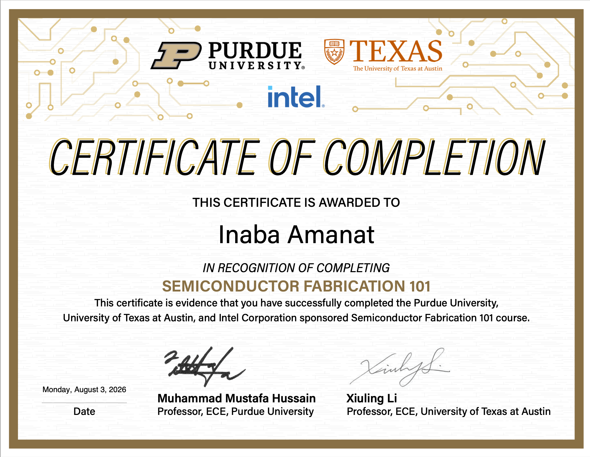

Apr 2026 — Present
Vice President Operations
Austin, Texas Metropolitan Area.
Austin, TX
Electrical & Computer Engineering — Texas Robotics Honors — The University of Texas at Austin. Building at the intersection of robotics, embedded systems, and simulation.
Robotics, signals, and the systems that sit between hardware and software.
Research, leadership, and hands-on hardware work.
Austin, Texas Metropolitan Area.
Helped design the drive system for an electric wheelchair using two 24V batteries, two motor drivers, and two brushed DC motors. Arduino IDE and embedded software.
Selected as one of two full-time undergraduate researchers working under Dr. Ross Neuman.
Designed and programmed a haptic piano system using the Hapkit platform, creating force-feedback piano keys inspired by Da Vinci surgical robots to replicate the tactile feel of pressing a real piano.
Selected as part of the founding cohort for Kode With Klossy's Technical Leadership Accelerator, a 12-week program in technical communication and leadership.
Coursework and credentials worth highlighting.
Certificate of completion for the Purdue University, UT Austin, and Intel Corporation sponsored Semiconductor Fabrication 101 course.

Selected work, pulled from github.com/inabaamanat.
A ROS 2 application built around a motion-capture system and Bertec instrumented treadmill for inverse dynamics and gait analysis at the HeRo Lab.
A communication framework connecting ROS 2 and Unreal Engine 5.8 using ZeroMQ and JSON, enabling real-time robotics visualization.
Force-feedback keyboard hardware built as part of the FRI robotics stream, exploring tactile response for piano input.
A portfolio built for Kode With Klossy's Technical Leadership Accelerator, documenting my growth in technical communication and leadership over the program.
Reach out — happy to talk robotics, research, or opportunities.